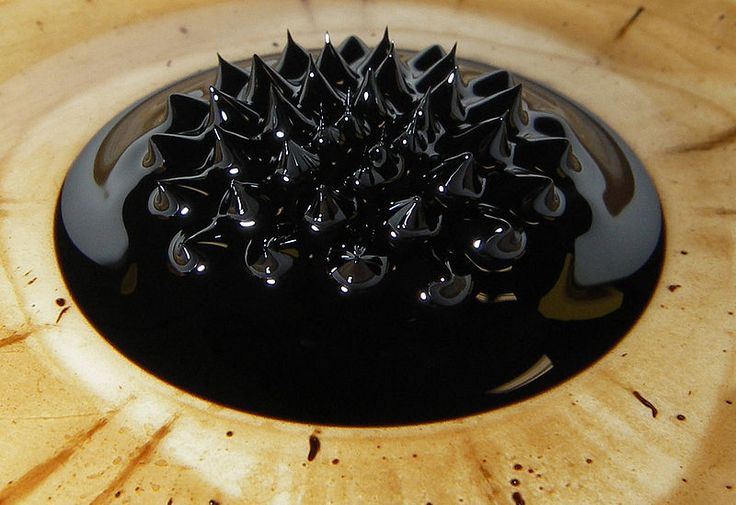

PENGERTIAN FERROFLUID
Source:.............
Ferrofluid adalah cairan pintar berupa suspensi koloid yang mengandung nanopartikel magnetik (skala 10 nanometer) dan dilapisi surfaktan di dalam cairan pembawa, sehingga dapat mengalir stabil sekaligus tertarik kuat oleh medan magnet eksternal.